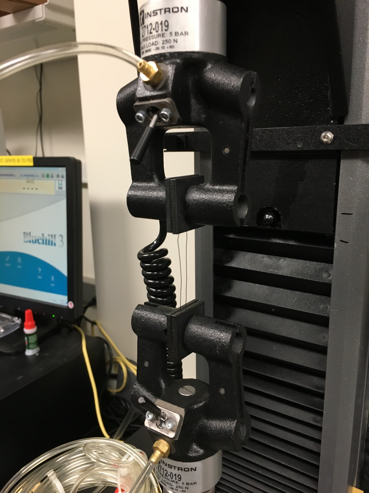

Neon Sheep Vape Mods
Freelance Product Designer / Neon Sheep
Jan 2018 - Ongoing
Super Sheep V2.0 Renders

Neon Sheep is a small NY based company that produces unique, handcrafted vape juices. As they've expanded into creating limited run vape mods with their in-house 3D printing facility, they've struggled to find available models for mods that can except new hardware, such as the DNA75c and high capacity 21700 batteries. I was brought onboard to create original designs for the company that are compatible with both new and old hardware to fit the needs of their customers.
Nu Delta Soda Fountain
Designer & Fabricator / Independent Project
Nov 2017 - Dec 2017
I'm brother of Nu Delta Fraternity and as such I'm responsible to perform duties at our parties. Once while I was assisting those on 'bar duty'. I realized they were overwhelmed because our system was terribly inefficient. I figured some sort of soda fountain-style machine would not only be an easier and faster way to pour drinks, but also would be able to store more liquids.
Soda Fountain Renders & Photo

I began by sketching out how I wanted it to look. After sketching a design simple enough to fabricate with hand tools in my dorm room, I created 3D assembly in Solidworks and created some renderings. After finalizing, I created a cost sheet to estimate the price of fabrication, including wiring, connectors, and fasteners. With my cost analysis complete and renderings present I negotiated with the Elected Council of Nu Delta to get the project funded and to have my time be compensated by diminishing my dues at an agreed upon rate.
In order to come in under budget and to hasten construction, slight modifications were made, e.g. walnut construction and joinery gave way to MDF and wood screws. The final product has two separate five-gallon HDPE beverage containers, allowing it to hold up to ten gallons of liquid. These containers were chosen for ease of cleaning, chemical resistivity, and high volume. Additionally, the fountain can serve a standard 8 fl. oz. in under half the time it would take to open and pour a beverage previously
Design Assistant
Student & Design Lead / Engineering, Innovation, & Design - 2.723
Sep 2017 - Dec 2017
In Engineering, Innovation, & Design, EID, groups of students are tasked with prototyping an Alexa Skill utilizing a framework called Sayspring. This project is used as tool to practice the core teachings of the class; including how to apply a design process. My team inferred from the quiz results of the class that initially many students had difficulty remembering and applying the 10 Step Design process the class focused on. We decided to create an Alexa skill that would not only review the process with the user, but also provide fictional scenarios to which the user could practice applying the steps.

To develop our skill we used industry leading practices, such as developing speech interactions utilizing K-Scripts. Then we performed two rounds of usability testing to improve our skill. Subsequently, we created a final deliverable to summarize our process, results, and takeaways. For this deliverable I created a faux company logo, color scheme, and templates using Microsoft Publisher to apply to our work. This final deliverable was accompanied by a presentation for which I again took the lead on design. The presentation was successful to the extent that instructors requested that we present again as an example for other students.
Line Follower
Student / Electronics for Mechanical Systems - 2.678
Sep 2017 - Dec 2017
For a final project competition, groups of 2 students had to rig up an Arduino-powered line-following robot in just 3 hours of lab time. All the robots, externally, were nearly identical due to limited hardware. However, the programming for each was unique. The most successful and fastest robots had the obstacles of the course hard-coded or choreographed utilizing Arduino’s millis() function. My partner and I were uninterested in this approach. We sought to make a robot that would make decisions based on information it obtained from its onboard sensors. So, we made use of the Arduino PID Library and conditionals. With our approach the robot was successfully able to navigate obstacles that hard-coded robots simply ignored because the path was straight.
Successfully Navigating of Typically Ignored Portion of the Track
Chocolate Printer
Designer / Umbr Technologies
Jun 2017 - Ongoing
3D printing with chocolate is nothing new. However, the most viable systems are expensive and produced with with proprietary technologies and often specially-formulated chocolate or powdered chocolate materials. Even the simpler DIY systems require the user to pre-temper their own chocolate to get desired results in the finish of the chocolate. To fix these problems, I have formulated initial designs for a FDM-based Cartesian or polar 3D chocolate printer that contains a reservoir that will temper chocolate for the user utilizing sous-vide technology.
Initial Renders
After identifying the key features of my printer, I began to 3D model what I imagined a finished product would look like; this product being intended as a unique kitchen aid and professional tool for experimental chefs. I identified three key subsystems to prototype for a proof of concept device: the tempering reservoir, a pump and nozzle delivery system for FDM-style chocolate delivery, and an unexposed polar or Cartesian movement system.
To fund the prototyping, I pitched my idea to a few individuals and raised over $500. I developed a rudimentary business plan and cost analysis for creating a prototype. If the prototype is successful I intend to branch into three key markets: STEM children's toys, professional kitchen tools, and chocolate manufacturing to replace expensive molds. Yet, I've recently pivoted in preference of a fulfillment service model to reduce cost and complexity to get to market.
Drawing for Designers
Student / Drawing for Designers - 21M.601
Feb 2017 - May 2017
My whole life I've loved to draw. Most of my drawing experience prior to this class involved googling images to copy and modify or tracing the outlines of images and transforming them into my own style, typically a western comic style. However, this class exposed me to new techniques and improved my ability not only to sketch from observing real life, but also to sketch from my imagination.
Sketches
Click to enlarge

Smart Gloves
Team Lead - Make MIT 2017
Feb 2017
Every year I put together a team for the Make MIT Hardware Hackathon. For the 2017 competition my five-member team consisted of both freshmen and sophomores specializing in computer science, mechanical engineering, and electrical engineering. I gathered the team together for two meetings prior to competition to discuss not only what we wanted to create, but also what we wanted to get out of this competition. In the end we decided to build a pair of smart gloves that could do the following: tell the time, assist in navigation, and make/recieve phone calls.
Competition Photos


During the competition I delegated tasks and continuously adjusted team priorities to get the most out of my teammates. I was also involved in fabrication of the gloves. I designed 3D printed electronic enclosures, designed and soldered electronic circuits, and embedded electronics into leather gloves. In the end the gloves could tell the user the correct time with a custom LED ring matrix that was toggled via a button embedded into the left glove to remain discrete. Additionally, the matrix could tell the user which direction to turn utilizing the same matrix in a compass-like fashion that pointed towards the correct direction provided by Google Maps. The calling feature unfortunately failed due to inadequate hardware. Yet the speaker and microphone were successfully wired and embedded into the gloves and a speech-to-text program was successfully created using a laptop's microphone as the input. The brain of the gloves was an Arduino Nano that communicated with a nearby laptop with internet access.
Cu-based SMA Investigation
Student & Financial Officer / Sport Technology: Engineering & Innovation - 2.96
Sep 2016 - Dec 2016
In Sports Technology: Engineering & Innovation, groups composed of undergraduate and graduate students of various disciplines work closely with industry partners to tackle an engineering problem over the course of a semester. My team worked with MAS, an athletic textile manufacturer. MAS is investing into smart fabrics embedded with shape memory alloys, SMAs. Searching for low-cost alternative to NiTi, the prevailing SMA on the market, MAS challenged us to investigate and characterize a copper based SMA invented by the Schuh Group at MIT. MAS also provided us with a stretch goal of developing a prototype material with an SMA embedded into it.
Instron Strength Testing

My team split into sub groups to handle prototyping and testing. As a member of the testing team, I assisted the characterization of the new copper-based SMA. We performed tests on Instron machines to discover the force output of material at different wire diameters, we tested the material's corrosion resistance using salt water baths, and we tested the material's solder-ability.
As the team’s financial officer, I managed the budget of $1000. My job also included approving and making all purchases and filing receipts with MIT's financial offices.
We presented all of our findings and prototypes in front of an audience of industry partners, including MAS, Adidas, Zebra, and more! We were informed by MAS that our engineering brief was distributed to their entire engineering team. They also inquired if we would be taking the class again next semester to continue our work. Executive Summary
Final Project Accompanying Video
Holodesk
Design Lead / MIT Sandbox & ProjX
Sep 2016 - Dec 2016
MIT School of Engineering Sandbox Grant
ProjX Grant
I was recruited by a friend to join a team of three sophomores to be the design lead on a product called Holodesk. Together we envisioned a smart desk whose entire working surface was a touch screen. Additionally, this desk would use computer vision to detect items on the desk and adapt its display to best fit the needs of its user. With these key features in mind we drew up a project proposal and I created some renders of our ideal prototype. This prototype had an acrylic work surface with a rear projection coating on its undersurface. Underneath would be a mount for a short throw projector and a compact computer. On the underside of the top shelf were two Xbox Kinects to be used for computer vision.
Holodesk Prototype Render
The project proposal succesfully secured a $5000 reward from the MIT Sandbox fund and a $500 reward from ProjX, an independent student group. Unfortunately, these grants were incremental and had stipulations to secure more of the total allotted funds. Through our cost estimates, it was not feasible to proceed to the next stages of funding. This was primarily due to the fact that the cost of ultrashort throw projectors and rear projection film in small quantities at the time exceeded our initial funding parameters. Without these components, we could not provide enough proof of concept to proceed to additional rounds of funding.
Rotated View of Holodesk
Bio-gel 3D Printer
Undergraduate Researcher / Tangible Media Lab
Aug 2016 - Sep 2016
A peer and I were hired by the Tangible Media Lab initially to construct a DIY 3D printer kit and to construct two third-party syringe feed extruders to rig onto the printer. This modification would allow the researchers of the lab could test their proprietary bio-gels on the device and utilize dual extrusion techniques. However, we took upon ourselves to go beyond the given task.
Images of the Construction Process

My partner and I recognized that the third party extruders were not intended for a dual extrusion system such as the one we were jerry-rigging onto the printer. Thus the motors of the each of the extruders were aligned on the same side, forcing the nozzle tips to be several inches apart. This wasted space significantly decreased the build volume of the machine. Using the few technical drawings we could find and measuring the parts we couldn't find, I created mirrored pieces of the extrusion mechanism. My partner then took my designs and milled them out of Delrin plastic, which was used in the original product. In the end we were able to increase the build volume of the printer by roughly 36%.
Running Exoskeleton
Undergraduate Researcher / Biomechatronics Lab
Jun 2016 - Aug 2016
During my time at the Biomechatronics Lab, I was involved in a number of projects. I designed and created a test bench for their next generation ankle prosthesis. I fixed a retired Ultimaker 2 to increase lab productivity. I trained and certified by Stratasys to maintain and operate their Objet systems, after this I helped schedule printing time and helped maintain the lab's own Connex 500 machine. However, the project over which I was able to take the most ownership was the design and prototyping of a passive running exoskeleton to increase endurance.
Inspired by a bike my mentor had seen which was powered by pedaling with both the arms and legs, he figured there could be some benefit to using the swing of the arms during running to assist the ankles. We sketched out a few ideas on a white board and converged to a general concept. The key features we initially envisioned were: some sort of lever arm at the ankle attached to a running shoe, a pulley transmission attached to a waist belt to align the timing of the swing with the push off of the ankle during a running cycle, and a cable that would run from the lever arm to the pulley system and from the pulley system to the hand of the runner to provide power. The goal was to transfer the energy of the forward swing of the runner's arm to the ankle during kick off such that the ankle's fast twitch muscles would not have to work as hard. Therefore, endurance would increase.
Conceptualization of the Exoskeleton
Before jumping into SolidWorks to create the CAD models for our concepts, my mentor and I utilized the lab's indoor treadmill and camera rig to capture my mentor's running gait for analysis. My mentor is an avid runner. I took key frames from the footage and used the program ImageJ to analyze them. This provided me with two crucial constraints. First, I observed that the kick off of his ankle was aligned in time with the forward swing of his arm. This demonstrated that a direct drive would be needed rather than some transmission system to sync the motions. Second, I was able to use known dimensions in the photo to deduce the area between his heel/lower leg and thigh throughout his gait to provide special constraints for the lever arm.
After creating CAD models for our distinct ideas, we started prototyping. The ankle mechanism and the now cable anchor at the waist were 3D-printed. The 3D printed parts were assembled with steel fasteners. Other parts, e.g. the running shoes, were modified or created via traditional methods.
With the first prototype complete, my mentor put on the exoskeleton and went for a run. The results were mixed. The exoskeleton succeeds in actuating the leg. However, it assisted the knee not the ankle as intended, due to two minor flaws. First, the anchoring at the hip wasn't enough to guide the cable to the correct actuation position. The cable simply went straight down to the lever arm pulling it up rather than forward. Second, the lever arm's shape was unbalanced, only pulling on the outer ankle, and needlessly complex in geometry, making it heavy.
Construction of the Exoskeleton

Construction of the Exoskeleton
Our final iteration resolved these issues. A Bowden cable now ran from the anchor at the waist to a custom shin guard. The inner cable then split into two and pulled on two lever arms on both the inside and outside of the ankle from a forward position rather than upward. The lever arms were lighter weight than before and simplified to make them easier to print as one piece rather than several.
We swapped the new system onto the shoes and gave it a test. My mentor stated that he definitely felt a difference and that they were actuating as intended this time. Unfortunately, as the summer came to an end, so too did my time at the lab.
Battle Botz
Student & Design Lead / Toy Product Design - 2.00B
Feb 2016 - May 2016
In Toy Product Design, small teams of freshmen and sophomores are introduced to creative product design. We learn the fundamentals of the product development process, including determining customer needs, brainstorming, estimation, sketching, sketch modeling, concept development, design aesthetics, detailed design, and prototyping.
Development Process

My team developed Battle Botz. Battle Botz is radio controlled robot laser tag game that allowed kids to customize their own fighting robots. We used a deterministic design process to narrow down our toy ideas and performed play testing with kids with both looks-like and works-like prototypes to fine tune our product for target market, children 8 years and older.
As design lead, I oversaw the mechanical design and production of the robots. We created two robots in our final iteration. Their chassis were constructed using laser cut acrylic and foam and a vacuum formed lid. They drove with an omnidirectional drive train. Each was equipped with a single IR emitter and IR receivers on all sides. I took it upon myself to silkscreen custom shirts and other apparel for our team's final presentation in front of an audience of over 400, including industry professionals.
Presentation Photos
Hand Exoskeleton
Team Lead / Make MIT 2016
Feb 2016
Top 10 Finalist
This was my first Make MIT competition, so I gathered a small team of 2 freshmen and myself to try to build a project I had envisioned. This was a unique year for Make MIT being since the competition was 2 weekends long. Weekend 1 was for the general competition, and Weekend 2 was for the top 10 finalists of Weekend 1.
Hand Exoskeleton
Week #1
In the first week, we created a hand exoskeleton. We imagined that such a device could help those partially paralyzed such as stroke victims. The exoskeleton was controlled with flex sensors glued to the glove. Flexing a finger of the control glove rotated servos which positioned the finger of the exoskeleton to preset positions. So, with the control glove you could turn on control of the exoskeleton, move it to a preset position(such as a closed fist) and turn off control to lock the exoskeleton into said position.
Week #2
Our exoskeleton placed us in the top 10 for the first weekend of competition, so we were invited to compete in Weekend 2's 'Tournament of Champions' so to speak. We were given a budget of $500 to place orders through their staff for components we would require to improve our devices. Rather than improve our existing exoskeleton, we decided to extend it further up the arm. To accomplish this, I sought out two more freshmen with experience in app creation and stepper motor electronics. I envisioned an arm exoskeleton with a powerful motor to control the elbow joint and for the whole system to be controlled via an app that would run on a wrist mounted phone for further freedom of the non-paralyzed hand. Not only did I manage the team to utilize everyone's strengths, but I also did the physical fabrication of the new exoskeleton. Using metal bands, I riveted the arm to a shoulder strap. Again with metal bands, I secured the stepper motor to an 80/20 aluminum extrusion frame. I created and 3D printed a wrist mount for an IPhone 6. Lastly, I soldered the necessary components. In the end, we were successfully able to demo our app and show that it could send signals to our Arduino.
Arm Exoskeleton
Myoelectric Arm
Mechanical Design Lead / MOMENTUM Competition 2016
Jan 2016
First Place
In the 2016 MOMENTUM Competition, teams of five, composed of freshmen and sophomores, were given four weeks to modify a robotic arm to be controlled with signals from EMG sensors. In the end, we were able to demonstrate our working arm by completing a list of tasks with it in front of a panel of judges including industry representatives. My team was 1 of only two to successfully complete all of the tasks. We demonstrated our confidence in our product by performing additional tasks with our arm. Moreover, we created 2 sets of control mechanisms that were successful in completing the task, one of which utilized machine learning algorithms.
Hand Exoskeleton

As mechanical design lead, I was responsible for creating specialized grippers for our arm. I did this using SolidWorks and 3D printing. I also helped create a Faraday cage to contain our electronics, smoothing out EMG signal reads. Lastly, using our team name 'Cerebrum et Brachium' I created custom iconography to brand our electronics and presentation poster to help us stand out.